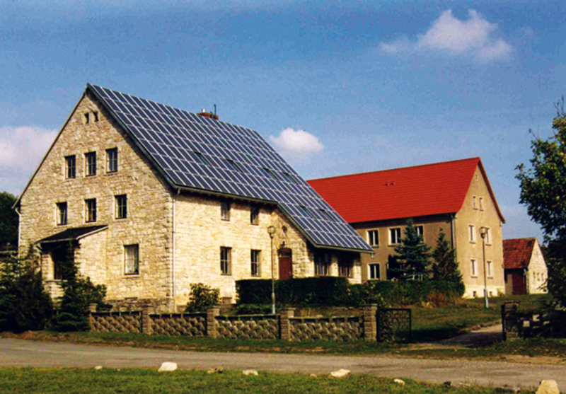
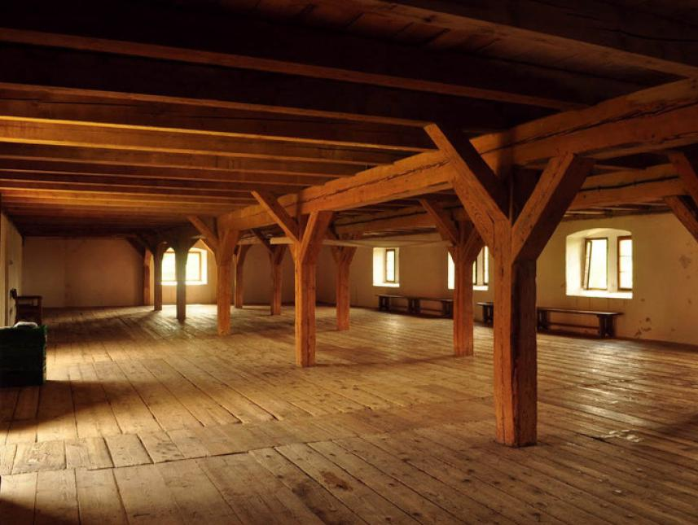
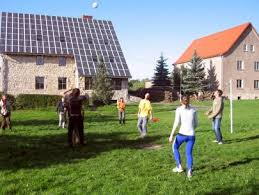
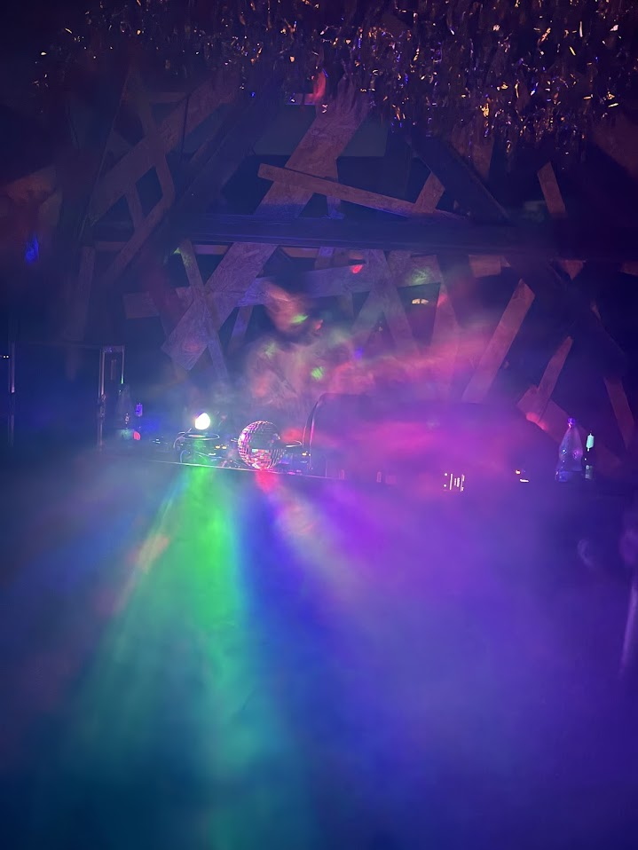
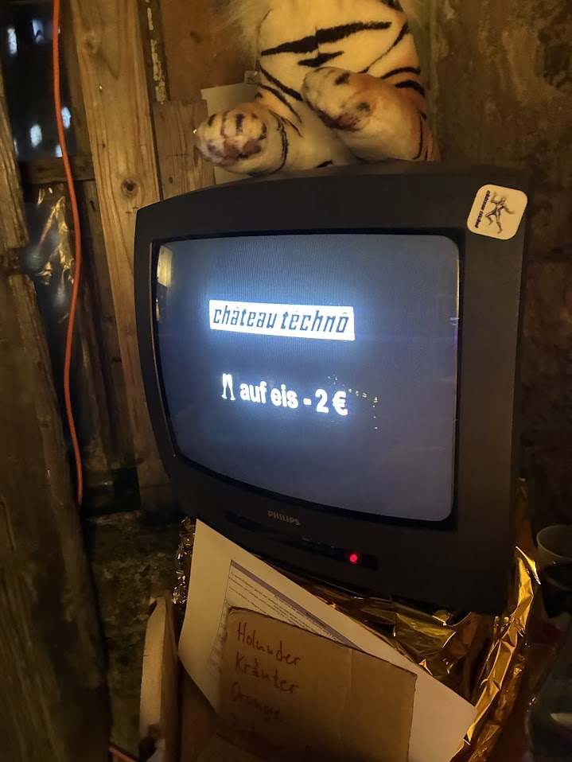
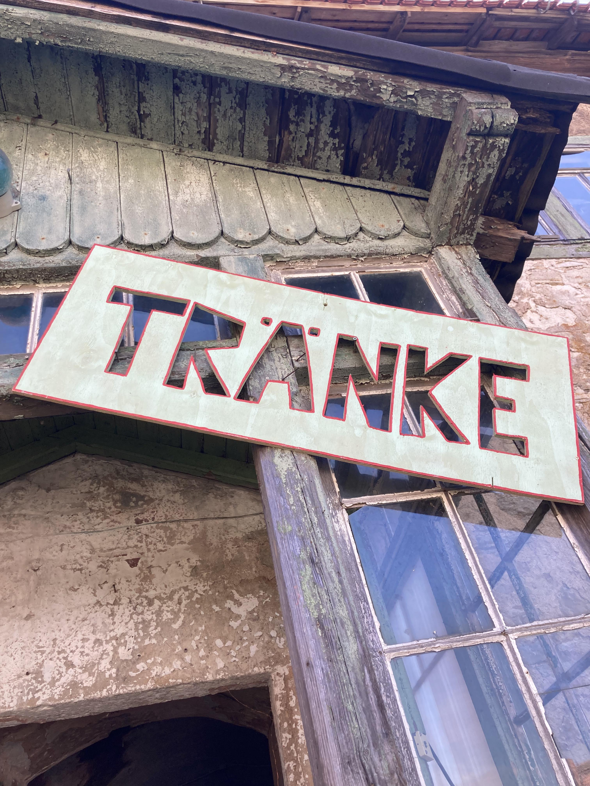
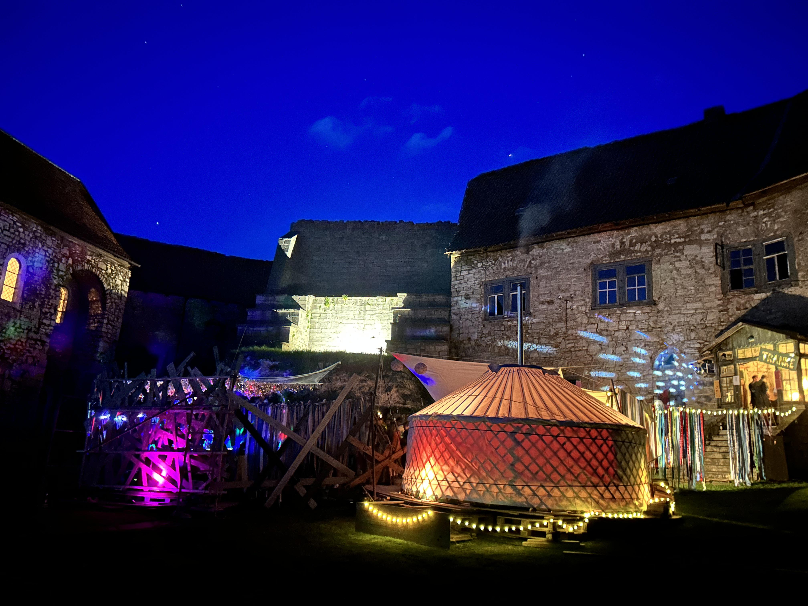
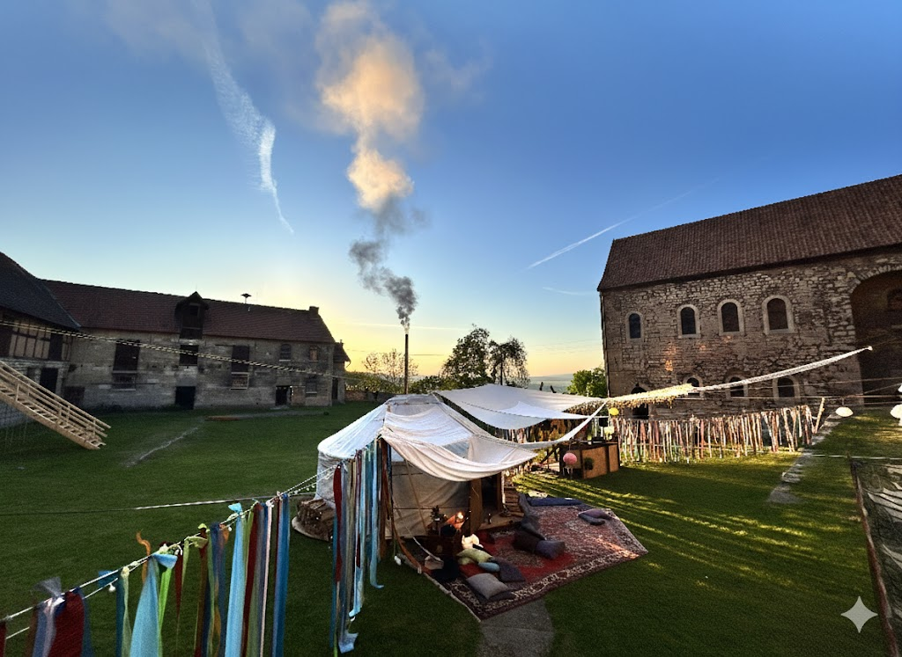
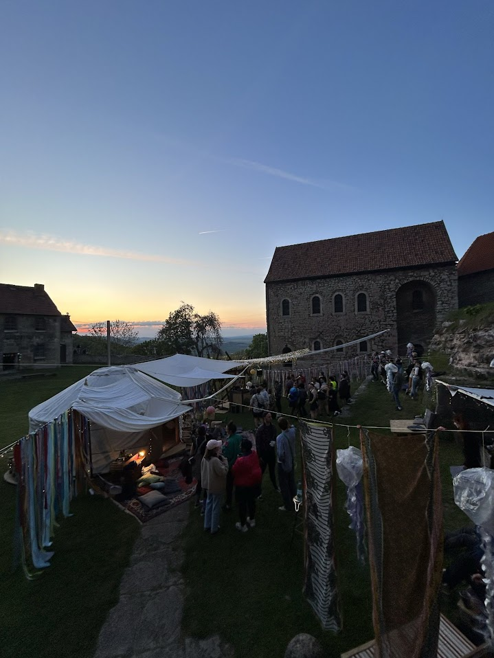

Lineup
+ more to be announced
Sound
FAQ
Eine Burg. Eine Community. Ein Rave. – Im Spätsommer 2023 haben wir uns als kleine Gruppe zwischen Stuttgart, Frankfurt, Köln, Berlin und München zusammengefunden und beschlossen gemeinsam ein Fest auf die Beine zu stellen – klein, nicht kommerziell, familiär, auf einer Burg. Für uns geht es ganz und gar nicht um Gewinn oder eine Dienstleistung, sondern um eine schöne gemeinsame Zeit. Eine Zeit, die entsteht, wenn aus einer Idee weniger ein Event wird, das erst durch das Mitwirken Vieler möglich ist.
Die beiden ersten Jahre auf der Burg Lohra haben uns vollständig überzeugt - es war eine große Freude zu sehen, wie keiner und keine Gast war, sondern alle Teil unserer Idee wurden. Wir machen seither kein Unterschied zwischen Tellerwäschern, Putzkolonnen, DJs oder Elektriker*innen - alle tragen bei und alle zahlen den gleichen Beitrag. Das neue Konzept macht es uns möglich, denjenigen, für die der Betrag ein Grund ist, nicht dabei sein zu können, eine solidarische Lösung zu finden.
Kommt gemütlich an, checkt ein, sucht euch einen Schlafplatz oder einen Ort für eure Dinge. Am 4. September um 18 Uhr beginnen wir mit einem Abendessen und gehen danach unserem eigentlichen Auftrag nach: 20 Uhr, Treffpunkt: Gewölbe!
Wir enden am Sonntagmorgen und gehen ab 11 Uhr ins Aufräumen über, um die Burg pünktlich um 15 Uhr zu übergeben. Bitte kommt zum Helfen um 11 Uhr in den Burghof!
Die Adresse der Location:
Burg Lohra
Amt Lohra 7
99759 Großlohra
Für die Anreise habt ihr in diesem Jahr folgende Möglichkeiten:
...mit ÖPNV und dann Taxis aus der Umgebung
Sondershausen:
Taxi Gebhardt: Tel: 0800 - 75 99 999 / Mail: info@taxi-gebhardt.de
Taxi Wenderoth: Tel: 03632 - 700700 / Mail: hwtaxi@aol.com
Nordhausen:
Werners Minicar Service: Tel: 03631 60 12 22 / Mail: info@werners-minicar.de
Taxi Breitung: Tel: 03631 900499
Leinefelde:
Taxi-Zentrale: Tel: 03605 50 20 31
Taxi Fischer: Tel: 03605 50 19 69 / Mail: Taxi-Fischer-KG-mail@t-online.de
Taxi Bosold: Tel: 03605 512701
Bleicherode / Niedergebra:
Taxi-Peter Carsten Trautmann: Tel: 036338 4 20 20 / Mail: trautmann-bleicherode@t-online.de
...mit ÖPNV und zu Fuß: Mit dem Zug bis Großlohra. Von dort kannst du den Bus bis zur Bushaltestelle Friedrichslohra/Wartehalle nehmen und einen Kilometer Fußweg zur Burg auf dich nehmen. Es ist mit Abstand die sportlichste, umweltfreundlichste und längste Anreiseart.
...indem du eine Mitfahrgelegenheit suchst. In unserer Planung für die Schichten wird es auch eine Übersicht zu "Mitfahrgelegenheiten" geben. Hier tragen sich Châtechis mit freien Plätzen ein. Vielleicht ergibt sich hier ein Match.
...mit dem Auto. Parken kannst du direkt auf dem Burggelände. Solltest du noch freie Plätze im Auto haben, dann trage dich am besten in unsere Mitfahrgelegenheiten-Liste ein
Details folgen bald
Mehrbettzimmer im Haus mit dem grauen und dem roten Dach
Mit selbst mitgebrachtem Schlafsack und Bettlaken (es gibt keine Bettwäsche oder Bettlaken oder Kissen/Decken vorort) in den Mehrbettzimmern gemütlich - die Bettenanzahl reicht für 140 (und damit voraussichtlich alle) Raver.

NullKommaNull-FOMO-Risiko-Schlafsaal in der Burg
In der Burg gibt es einen großen Saal, in dem ihr rustikal nächtigen könnt. Sucht euch eine gemütliche Ecke mit eigener Isomatte und Schlafsack. Stolpert aus dem Schlafsack die steile Treppe hinunter direkt auf den Garten Floor!

Zelten auf der Zeltwiese
Macht es euch auf der Zeltwiese neben dem Haus mit dem grauen Dach gemütlich in eurem selbst mitgebrachten Zelt oder Van und stolpert morgens direkt nach nebenan zum Frühstück.

Währenddessen:
Freund:innen für Freund:innen - die Idee trägt sich nur, wenn alle ein wenig mit anpacken - den Schichtplan werden wir euch vor dem Festival noch zukommen lassen.
Davor:
Wir starten am Dienstagnachmittag (2. September) mit dem Aufbau und freuen uns über helfende Hände, um die Floors aufzubauen und die Burg herauszuputzen oder das Bauteam zu verpflegen. Schreib uns gerne eine Mail, falls du Zeit und Lust hast früher anzureisen und mitanzupacken!
Danach:
Damit das Festivalgelände bald wieder so aussieht wie vor dem Châtéch und wir die Burg übergeben können, benötigen wir Hilfe beim Abbau. Bitte kommt am Sonntag um 11 Uhr in den Burghof - viele Hände...
Ihr findet Toiletten und Duschen im roten und grauen Haus. Zudem findet ihr Toiletten im Burghof nahe den Floors.
Damit ihr eure Wintersachen zuhause lassen und uns mit euren Partyoutfits beglücken könnt, werden wir nach Anbruch der Dunkelheit drinnen raven (Gewölbe) und haben zum Entspannen und Runterkommen eine (beheizte) Jurte besorgt, in der ihr es euch jederzeit kuschelig machen könnt.
Alkoholische Getränke (Bier, Radler, Winzersekt aus Baden, Luft) und alkoholfreie Getränke (Softdrinks, Mate, Mineralwasser, alkoholfreies Bier) gibt es den ganzen Tag und die ganze Nacht über vor Ort an der Bar (in der Burg). Die Getränkepreise werden fair sein und sollen lediglich unsere Kosten decken. Wasser kannst du dir natürlich während des gesamten Wochenendes in den Sanitäranlagen oder in der Küche in dein eigenes Gefäß füllen.
WICHTIG: Bring your own Cup! Wir sparen uns damit das Spülen und viele Pappbecher. Bring einfach deinen Lieblingsbecher mit und verwende ihn übers Wochenende.
Ihr könnt nach dem Check-In Getränkewertkärtchen kaufen, mit denen ihr dann an der Bar Getränke bekommt. Sollten euch die Wertkärtchen im Laufe des Wochenendes ausgehen, dann kommt einfach auf das Orgateam zu. Wir haben Nachschub dabei.
Wir planen für uns alle eine vegetarische/vegane Verpflegung, die du im Erdgeschoss des grauen Hauses finden wirst:
| Freitag | Samstag | Sonntag |
|---|---|---|
| Anreise | ab 10:00 Frühstück ☕ | ab 10:00 - 13:00 Frühstück ☕ |
| tagsüber - on demand 🥗 und Obst und Kuchenservice im Burghof | Aufräumen und Abreise | |
| ab 18:00 - 20:00 Abendessen | ab 19:00 - 21:00 Abendessen 🍲 |
Im Voraus erreichst du uns am Besten über die bekannte Mailadresse (chateautechno24@gmx.de). Alle wichtigen Infos kommunizieren wir in der Signalgruppe und hier in der FAQ Sammlung.
Wir posten für Notfälle auch noch eine Handynummer in die Signalgruppe, die auch während des Wochenendes immer zu einer aus dem Orgateam führt.
Die Burg Lohra ist nicht nur Ravelocation für das Wochenende, sondern tagsüber auch Ausflugsziel. Es kann daher sein, dass euch auch mal Wanderer und Besucher begegnen. Wir gehen davon aus, dass wir nachts unter uns sind.
Am Check-In erhaltet ihr ein paar bunte Fingernägel, damit wir schnell erkennen können, wer zu Château Techno gehört und wer nur die Aussicht genießt. Zieht bitte auch eure Konsequenzen für euer Feierverhalten aus dem halböffentlichen Raum.
Wir möchten gemeinsam mit euch ein unbeschwertes und freies Festivalerlebnis schaffen, in dem sich jede*r willkommen und respektiert fühlt und wir unbeschwert zusammen feiern können.
Daher: Bitte behandelt einander mit Respekt und achtet auf die persönlichen Grenzen anderer. Solltet ihr dennoch Zeuge von diskriminierendem oder übergriffigem Verhalten werden, habt ihr die folgenden Möglichkeiten:
- Ruft uns auf dem Orgahandy an
- Sprecht das Orgateam an
- Im worst case: Geht zum DJ und bittet sie/ihn sofort, die Musik auszuschalten.
Die Burg Lohra besteht in weiten Teilen aus sehr viel Holz und wir wollen, dass das auch so bleibt. In den Gebäuden, der Jurte und in deren direkter Nähe bitten wir euch daher auf keinen Fall zu rauchen oder ein Feuer zu starten. Im Freien und mit Abstand zur Burg ist das Rauchen erlaubt. Im Innenraum verstehen wir keinen Spaß.
Eindrücke 2025





